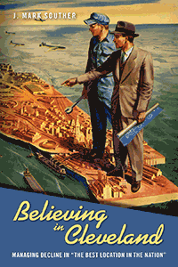

<body bgcolor="#FFFFFF" text="#000000" link="#0000FF" vlink="#CC0000" alink="#CC0000"><center><hr width="350" size="1" align="center" noshade>Explores how civic and business leaders used image-making in an effort to reimagine and revive Cleveland in the decades after World War II<hr width="350" size="1" align="center" noshade><p><a href="https://cdcshoppingcart.uchicago.edu/Cart/ChicagoBook.aspx?ISBN=&&PRESS=temple" target="_top">Buy this book!</a> | <a href="https://cdcshoppingcart.uchicago.edu/Cart/Cart.aspx?PRESS=temple" target="_top">View Cart</a> | <a href="https://cdcshoppingcart.uchicago.edu/Cart/Cart.aspx?PRESS=temple" target="_top">Check Out</a></p><p></p></center><!--none//--><h1 class = "booktitle">Believing in Cleveland</h1> <h1 class = "subtitle">Managing Decline in "The Best Location in the Nation"</h1>
<h3>J. Mark Souther </h3>
paper: $29.95, Nov 17<BR>EAN:&nbsp;978-1-4399-1373-4<BR><font color=#990033>Not Yet Published Preorder</FONT><font size=-7><br>&nbsp;</font></p><p class="info">cloth: $92.50, <BR>EAN:&nbsp;978-1-4399-1372-7<BR><font color=#990033>Not Yet Published Preorder</FONT><font size=-7><br>&nbsp;</font></p><p class="info">e-book: $29.95, <BR>EAN:&nbsp;978-1-4399-1374-1<BR><font color=#990033>Not Yet Published Preorder</FONT><font size=-7><br>&nbsp;</font></p></p></td></tr></table>
<BR> <p class="info">288 pp<BR> 6 x 9<BR> 2 figs., 12 halftones, 2 maps <p class="info"><font size=-7>&nbsp;</font></p><p class="info">
</P><BLOCKQUOTE></BLOCKQUOTE>
<p>Detractors have called it "The Mistake on the Lake." It was once America's "Comeback City." According to author J. Mark Souther, Cleveland has long sought to defeat its perceived civic malaise. <i>Believing in Cleveland </i>chronicles how city leaders used imagery and rhetoric to combat and, at times, accommodate urban and economic decline.<br/><br/>Souther explores Cleveland's downtown revitalization efforts, its neighborhood renewal and restoration projects, and its fight against deindustrialization. He shows how the city reshaped its image when it was bolstered by sports team victories. But Cleveland was not always on the upswing. Souther places the city's history in the postwar context when the city and metropolitan area were divided by uneven growth. In the 1970s, the city-suburb division was wider than ever. <br/>;<br/> <i>Believing in Cleveland </i>recounts the long, difficult history of a city that entered the postwar period as America's sixth largest, then lost ground during a period of robust national growth. But rather than tell a tale of decline, Souther provides a fascinating story of resilience for what some folks called "The Best Location in the Nation."<br>
<P CLASS="top"><A HREF="#top">BACK TO TOP</A></P>&nbsp;
<BR>&nbsp;
&nbsp;<P>
</P><BR>&nbsp;
<H2 class="inpageheading"><A NAME="author bio"></a>About the Author(s)</H2><p><b>J. Mark Souther</b> is Professor of History at Cleveland State University and the author of <i>New Orleans on Parade: Tourism and the Transformation of the Crescent City.</i><br>
<P CLASS="top"><A HREF="#top">BACK TO TOP</A></P>
<p><h2 class="inpageheading"><a name="subjects"></a>Subject Categories</h2> <p><a href="http://www.temple.edu/tempress/urban.html" target="_top">Urban Studies</a> <br><a href="http://www.temple.edu/tempress/history.html" target="_top">History</a> <br><a href="http://www.temple.edu/tempress/political.html" target="_top">Political Science and Public Policy</a> <br><a href="http://www.temple.edu/tempress/business.html" target="_top">Business/Economics</a> <br><a href="" target="_top"></a> </p>
</p>
<P>
<h2 class="inpageheading">In the Series</h2>�
<p>�<a target="_top" href="http://www.temple.edu/tempress/urban_life.html" OnMouseOver="window.status='Click for other books in this series!';return true;"OnMouseOut="window.status=" ><i>Urban Life, Landscape, and Policy</i></a></P>
<p><p>
The <em>Urban Life, Landscape, and Policy</em> Series, edited by David Stradling, Larry Bennett, and Davarian Baldwin, was founded by the late Zane L. Miller to publish books that examine past and contemporary cities, focusing on cultural and social issues. The editors seek proposals that analyze processes of urban change relevant to the future of cities and their metropolitan regions, and that examine urban and regional planning, environmental issues, and urban policy studies, thus contributing to ongoing debates.
</p></P>
�</P>��
</P>
<p align="center"><a href="https://cdcshoppingcart.uchicago.edu/Cart/ChicagoBook.aspx?ISBN=&&PRESS=temple" target="_top">Buy this book!</a> | <a href="https://cdcshoppingcart.uchicago.edu/Cart/Cart.aspx?PRESS=temple" target="_top">View Cart</a> | <a href="https://cdcshoppingcart.uchicago.edu/Cart/Cart.aspx?PRESS=temple" target="_top">Check Out</a></p><p><font face="Arial" size="1"><a href="copyright.html" onMouseOver="window.status='Web Copyright Policy';return true;" onMouseOut="window.status=''" title="Web Copyright Policy">&copy;</a> 2017 <a href="http://www.temple.edu" target="new" onMouseOver="window.status='Link to Temple University home page';return true;" onMouseOut="window.status=''" title="Link to Temple University home page">Temple University</a>. All Rights Reserved. http://www.temple.edu/tempress/titles/2410_reg.html</font></p>